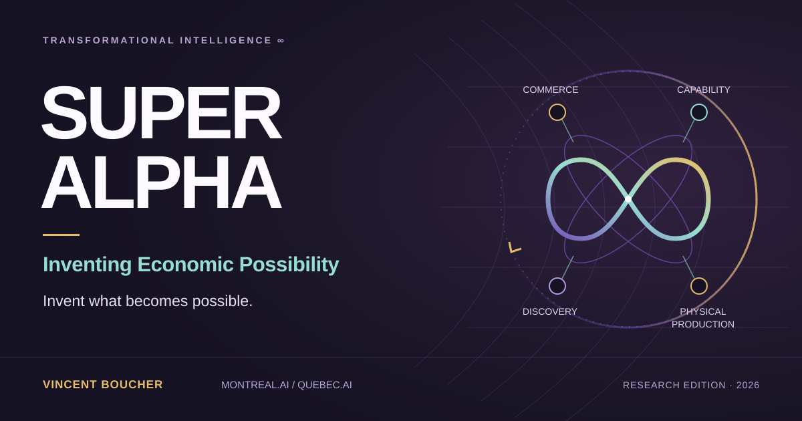

Earn the next move
Deliver accepted value, collect payment, cover complete costs and obligations, and use available resources for worthwhile expansion.

Invent a valuable activity that was previously uneconomic. Construct an extraordinary advantage. Turn accepted value into sustainable profit and greater productive power.
The central idea
Some of the largest opportunities have no product category yet. Their missing piece may be a measurement, a production method, a scientific instrument, a reliable interface, or an arrangement that makes cooperation worthwhile.
SUPER ALPHA treats that missing piece as something intelligence can attempt to construct. It searches for the valuable outcome, the means of delivering it, the evidence of acceptance, and the voluntary commercial arrangement together.
Invent what becomes possible.
The research question is concrete: can a first construction create an accepted, profitable activity and leave behind a capability that makes a more consequential successor economically reachable?
How the enterprise compounds
Each loop has a distinct job and a distinct standard of evidence. Their connection is the mechanism to investigate.
Deliver accepted value, collect payment, cover complete costs and obligations, and use available resources for worthwhile expansion.
Retain qualified instruments, representations, methods and interfaces. Test what they enable on fresh successor work.
Test whether a changed invention procedure constructs better useful capabilities under comparable starting conditions.
Qualify, commission, maintain and reproduce productive assets. Measure useful energy, conforming output and reliability.
A successor can be financed by an earlier result, enabled by its retained capability, or both. The paper keeps those relationships separate so each can be tested.
Three prospective industry directions
These are research directions with demanding first tests. Their potential depends on constructing the missing means and demonstrating a complete economic case.
Construct instruments, experimental interfaces and production methods that open new questions to investigation. A qualified instrument becomes a means of building the next.
First test: does the constructed capability enable a genuinely fresh investigation against the strongest complete alternative?
Turn surviving records into a validated measurement series for a question nobody planned to measure, where the evidence contains enough information.
First test: can the system establish what the records identify, preserve uncertainty, and deliver information useful enough to justify its full cost?
Construct measurement, tooling, control and maintenance capabilities that expand useful production and make later installations easier to build and sustain.
First test: does the complete arrangement improve conforming output or useful energy, then reproduce that benefit in a new setting?
What this edition establishes
The analytical construction is conditional on its declared assumptions. It is not a new commercial deployment, observed customer demand, an autonomous scientific discovery, or a physical production result.
The paper makes these distinctions part of its argument. A useful model specifies what would need to be demonstrated next.
The long horizon
The ambition extends through scientific infrastructure, useful energy, manufacturing, computation and maintainable production—toward increasingly capable terrestrial and space systems.
Progress must cross real engineering boundaries: materials, fabrication, assembly, commissioning, transport, maintenance, replacement and heat rejection. Each successful construction should make a further useful construction more reachable.
The complete research paper
Search, zoom and navigate using the PDF controls. On a phone, or if the preview is blank, open the full paper or download it.
Open research
The LaTeX source, bibliography, exact model and build instructions are published together. Use the versioned edition when citing the work.
Boucher, Vincent. SUPER ALPHA: Inventing Economic Possibility. MONTREAL.AI / QUEBEC.AI, edition 1.0.0, 3 November 2026.
Edition 1.0.0 · 3 November 2026 · 26 pages.
PDF SHA-256: 37fc425350e752a416f8de88f8dd15f6fbe19c9194bfbd2a0bdc8b4245ca819d
The manifest binds this edition to its published bytes. The versioned release preserves the PDF and source for citation and reproduction.